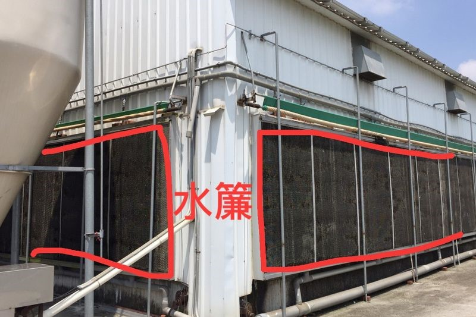
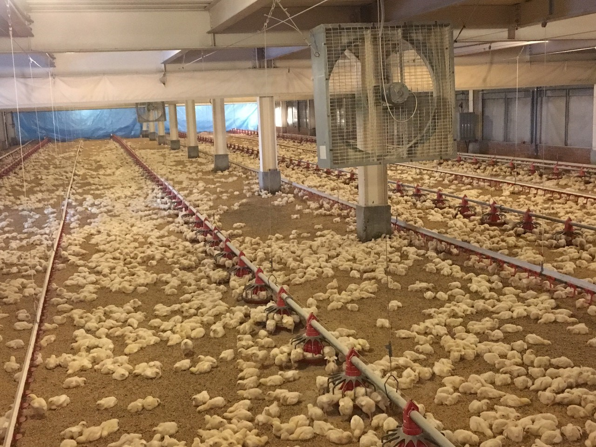
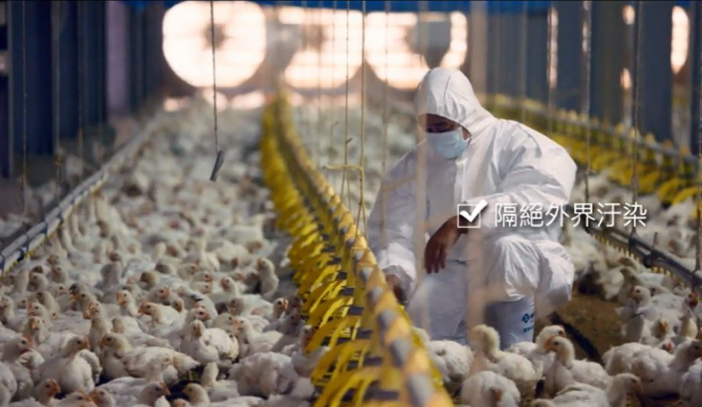

生長環境
生長環境水簾式雞舍
水簾式雞舍是中國人為了好稱呼起見給這類型式雞舍的代名詞，因為這類型雞舍之重要特色，不是只有水簾而且還有風扇抽風及密閉之特色。水簾這名詞也相當牽強，因為這一型禽畜舍中有一型是由上方直接灑水下來形成一層水簾，但絕大部份是水由上灑下 ( 流下 )，經由化學防腐處理過之纖維素所做成的巢型散熱板，左右風可透過，上下只要水量足、噴灑方法正確，水可流下弄溼散熱板所有蜂巢。為便於稱呼起見，此一散熱板或灑水下來的空間我們都稱之為水簾 ( Pad )。水簾外加所有附屬裝置 ( 詳見後 ) 稱之為水簾系統，英文裏名稱並不一致，有稱之為 Wet pad cooling system ( 水簾冷卻系統 )，也有稱之為 Cooling pad system ( 冷凍水簾系統 )。
風扇及密閉之目的在於風扇將雞舍內之風抽出，而密閉會造成雞舍內之負壓，因此風不得不由雞舍另一端之風口進入雞舍，可達到通風之目的。在英文裏名稱也不一致，有稱之為 Forced ventilation system ( 強迫通風系統 )，也有稱之為 Tunnel - ventilated house 或 Tunnel ventilated system ( 隧道型通風 ( 舍 ) 或系統 )，亦有稱之為 Tunnel ventilation ( 隧道型通風 )，另外一種橫跨式通風 ( Cross ventilation )，其原理和隧道型通風相似。
水簾式雞舍 ( 或畜舍 ) 基本上包含水簾系統和強迫通風系統。
1、冷卻作用：只有強迫通風對雞隻冷卻之效果並顯著，如將水簾系統和強迫通風系統合併，則
（1）空氣通過水簾時，由於水份之蒸發吸收熱量導致空氣冷卻，亦即可使得雞舍冷卻。
（2）強力之通風可以使得雞隻呼出之熱量可立即帶走，雞吸進去之涼空氣也可以有帶走肺內熱量之效果。
（3）雞隻對流失熱達到最快的移走速度。
（4）因為空氣冷卻，因此會增加雞隻對流失熱。
2、除去不良氣體：除了冷卻作用外，水簾雞舍的另一功能是可以除去不良氣體，間接減少雞隻因不良氣體所引起之呼吸道疾病、眼睛問題及其他疾病。例如減少細菌數、增加氧量均可使疾病減少。
